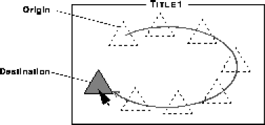
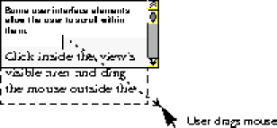

View class and its subclasses direct events to the appropriate object. You handle the events by overriding a few methods in the receiving object.
Event class provides the foundation for recording event information. Two subclasses of Event record the basic types of events:
MouseEvent class records mouse actions, such as clicks and drags.
KeyEvent class records keypresses.
In its main thread, the application removes an event from the queue, determines its destination, and then delivers the event, executing the event processing code in the receiving object. Once this code completes, the application's main thread removes the next event and repeats the cycle. Unless your application creates additional threads, this design ensures that there is never more than one thread executing code in your application.
MouseEvent class records an action that the user took with the mouse. For example, whenever the user presses a mouse button, the application receives a MOUSE_DOWN event, which it directs to the view that should receive it.
Constants in the MouseEvent class define the following types of mouse events:
MOUSE_DOWN--User pressed a mouse button.
MOUSE_DRAGGED--User moved the mouse while holding a mouse button down.
MOUSE_UP--User released the mouse button.
MOUSE_ENTERED--User moved the mouse pointer into a view's bounds.
MOUSE_MOVED--User moved the mouse pointer within a view's bounds.
MOUSE_EXITED--User moved the mouse pointer out of a view's bounds.
MouseEvent class record the location at which an event occurred, and the modifiers variable records information about the state of modifier keys, such as the Shift key.
viewForMouse method. The application sends the mouse down event, and corresponding mouse dragged and mouse up events, to this view.
View methods listed in Table 4.1:
|
Constant
|
Method
| MOUSE_DOWN
| public boolean mouseDown(MouseEvent event);
| MOUSE_DRAGGED
| public void mouseDragged(MouseEvent event);
| MOUSE_UP
| public void mouseUp(MouseEvent event);
|
|---|
In the View subclass that is handling events, override methods that correspond to events that you want to process. For example, a button-like View subclass could use the following mouse-handling code:
This public boolean mouseDown(MouseEvent event) {
if (!isEnabled()) {
return false
}
pressed = true;
draw();
return true;
}
public void mouseDragged(MouseEvent event) {
boolean mouseOver;
mouseOver = bounds.containsPoint(event.x, event.y);
if (pressed != mouseOver){
pressed = mouseOver;
draw();
}
}
public void mouseUp(MouseEvent event) {
if (pressed) {
performClick();
pressed = false;
draw();
}
}View subclass takes action on all three mouse events. If the object is disabled, mouseDown returns false, indicating that the object does not wish to receive the corresponding mouse-dragged and mouse-up events.
Entered, moved, and exited events
To receive mouse entered, moved, and exited events, override the View methods listed in Table 4.2:
|
Event
|
Method
| MOUSE_ENTERED
| public void mouseEntered(MouseEvent event);
| MOUSE_MOVED
| public void mouseMoved(MouseEvent event);
| MOUSE_EXITED
| public void mouseExited(MouseEvent event);
|
|---|
Override any or all of these methods, depending upon the event types that you wants to process.
A
View subclass that animates its contents when the mouse appears within a certain portion of its bounds could use the following mouse handling code:
public void mouseEntered(MouseEvent event) {
if (hotPolygon.contains(event.x, event.y)){
startAnimating();
}
}
public void mouseMoved(MouseEvent event) {
if (hotPolygon.contains(event.x, event.y)) {
startAnimating();
} else {
stopAnimating();
}
}
public void mouseExited(MouseEvent event) {
stopAnimating();
} Event coalescing
When your application is working with mouse-dragged or mouse-moved events, you typically do not want to respond to every event; instead, you usually want to work with the most recent event.
For example, suppose that you want to display an image under the mouse pointer as the user drags the mouse. If your application responds to every event, the image will appear to lag and follow the path of the pointer, rather than always appearing at the current pointer location. When you respond to every event, this behavior occurs because the system generates mouse-dragged events faster than your view can process them.
To solve this problem, the IFC coalesces mouse events; that is, it sends only the most recent mouse-dragged or mouse-moved events to a view and ignores the rest. In the following example, the result is that the image always appears at the current mouse pointer location rather than trailing the pointer and appearing at each of its intermediate positions.
Event coalescing

wantsMouseEventCoalescing method to return false.
Autoscrolling
Interface elements that appear within a scroll view, such as a list view or a text view, often allow the user to scroll an area into view by clicking within the view and dragging outside its visible bounds.
For example, word-processing applications often let the user select more text than is visible by clicking within the visible area and dragging above or below this area. While the user holds the mouse outside the visible area, the program scrolls a new portion of the document into view and selects it. This process is called autoscrolling.
Autoscrolling in a text view

wantsAutoscrollEvents method to return true. If the user clicks within the view's bounds and drags the mouse pointer outside the view's visible area, the view will periodically receive mouse-dragged events sent to its mouseDragged method. The view then compares the mouse coordinates contained in the event to the view's visible area and scrolls the appropriate portion of itself into view.
For example, the following code shows how to override the mouseDragged method to respond to autoscroll events in a list view:
public void mouseDragged(MouseEvent event) {
The
if (!containsPointInVisibleRect(event.x, event.y)){
tmpRect = new Rect(bounds.x, event.y, 1, rowHeight);
scrollRectToVisible(tmpRect);
}
...
}scrollRectToVisible method travels up the view hierarchy until it locates a view that is able to perform the scrolling operation.
KeyEvent class define the following types of key events:
KEY_DOWN--User pressed a key.
KEY_UP--User released a key.
View methods listed in Table 4.1.
|
Constant
|
Method
| KEY_DOWN
| public void keyDown(KeyEvent, event);
| KEY_UP
| public void keyUp(KeyEvent, event);
|
|---|
You only have to handle the key-down event to receive keyboard input.
Because several views might be competing for keyboard input, a view that is interested in receiving key events must notify the application by sending setFocusedView to itself. This method causes the application to stop sending key events to the view that has the current keyboard focus and begin forwarding them to the requesting view.
Pausing and resuming focus
An application suspends the sending of keyboard input to the focused view under certain conditions. For example, if the user begins using a different application, the new application receives the subsequent keyboard input. Whenever the Java application suspends input to a focused view, the focused view receives a pauseFocus message. In response, you can have it redraw itself to indicate this suspended state. For example, you can hide its selection rectangle or its flashing insertion point. The application sends the focused view a resumeFocus message when keyboard input resumes.